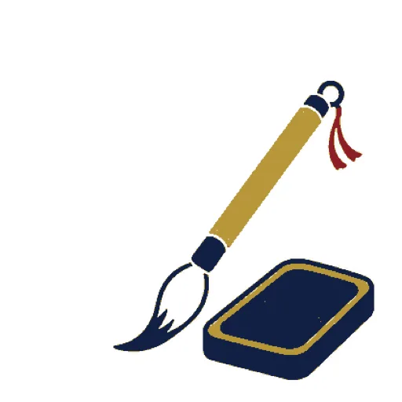
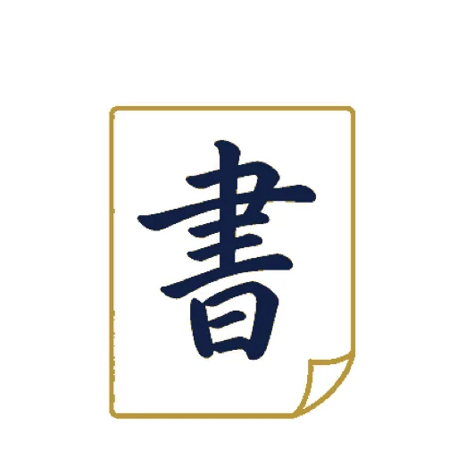
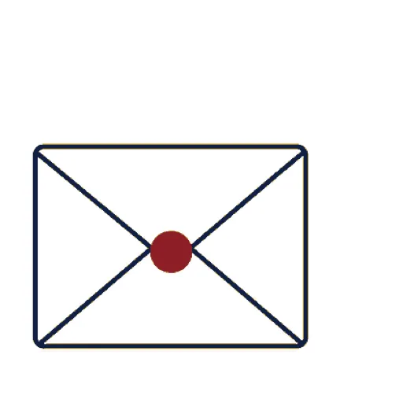
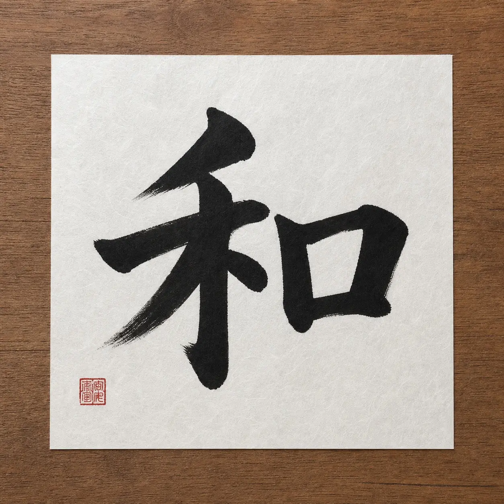
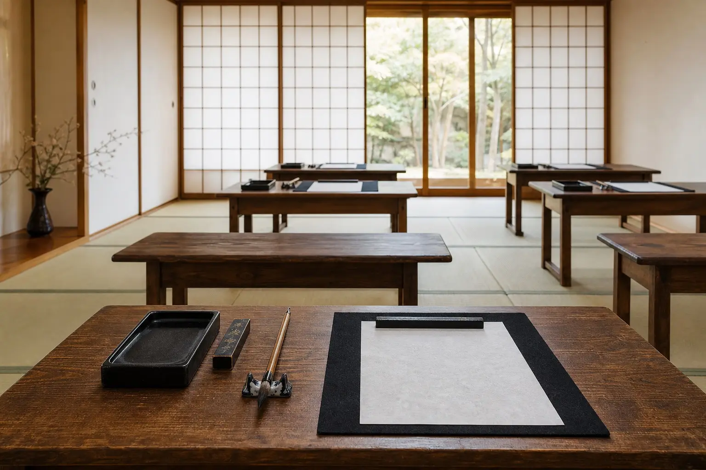
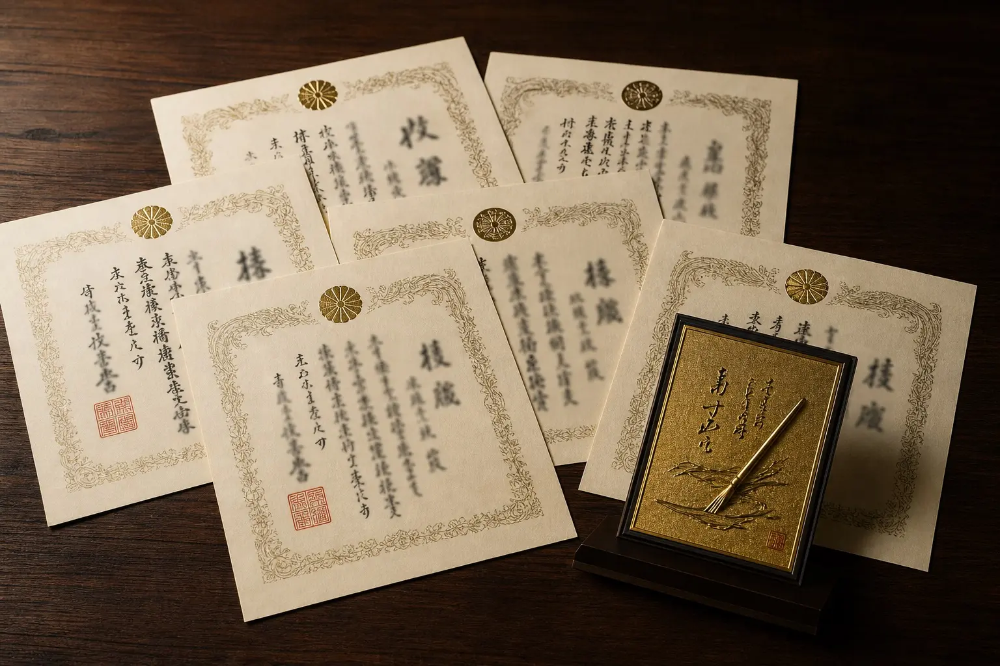
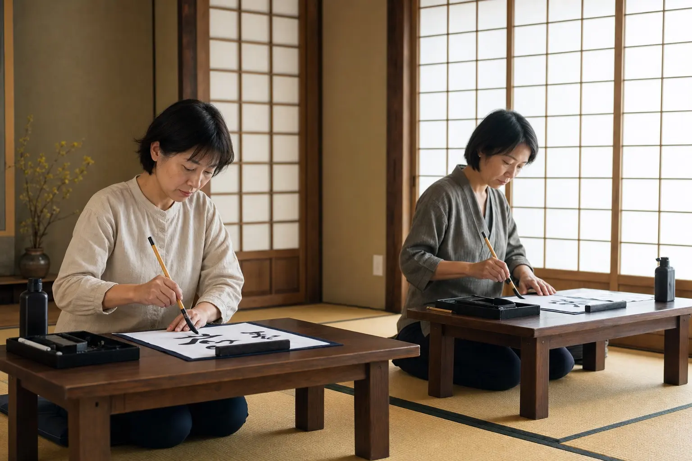
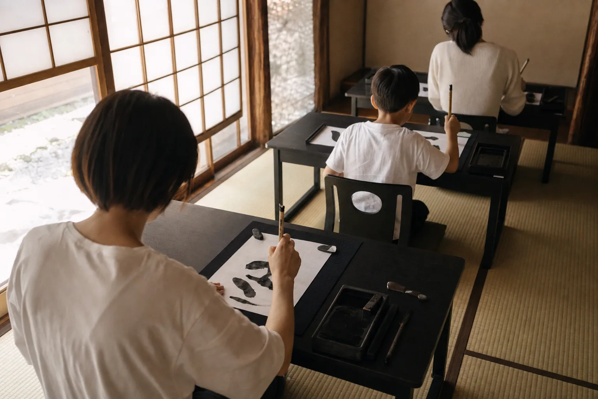

Hirata Studio
平田教室
- Address
- 岐阜県海津市
平田町野寺974 - Hours
- 月・火・木 16:00–20:00
水 18:30–20:00 - Closed
- 日曜・祝日
- Parking
- 無料 5台

一柳書道教室は、岐阜県海津市の平田と高須にある書道教室です。 幼児から大人・大学生まで、家族で長く通える教室を、30年前から海津のまちで続けてきました。
明治神宮全国少年新春書道展では、10年連続で優秀団体賞をいただきました。 第一席賞をうけた生徒も5名。けれど、ここで一番大切にしているのは、子どもが「もう一枚書きたい」と言えること。大人が「今日は静かな時間がもてた」と帰っていけること。
上手くなることだけが、書道のすべてではありません。
姿勢を正し、墨を磨り、紙とむきあう。その短い時間に、家族の毎日を整える小さな軸ができていく。
初めての方には、まず一度、教室の空気を見にきてほしいと思っています。
なぜ多くのご家庭が、海津で書道教室を続けるのか。
数字でわかる、一柳書道教室の足跡をご紹介します。
明治神宮全国少年新春書道展で、10年続けて優秀団体賞をうけました。第一席賞も5名輩出。地域の小さな教室から、全国の檜舞台へ。
平田と高須の2教室で、30年間ずっと筆を握ってきました。お父さん・お母さんが通った教室に、いまお子さんが通う。親子三代の生徒もいます。
初めの一歩を、軽くしたいから。入会金も年会費もいただきません。文部科学省後援検定実施校として、段位までしっかり伴走します。
明治神宮全国少年新春書道展での、生徒たちの足跡です。
幼児から大人・大学生まで。目的とペースにあわせて、6つのコースから選べます。

えんぴつの正しい持ちかたから、ひらがな・カタカナまで。幼児から小学校低学年向けの、最初の一歩です。

小学生から本格的に学ぶ筆遣い。漢字・かなの基本から作品制作まで。明治神宮展への出品もこのコースから。

えんぴつ・ボールペンで書く、整った文字。学校のノートが見ちがえるほど変わります。検定にも対応。
のし袋・芳名帳・履歴書。大人になってから「書く場面」が気になりはじめた方へ。1回30分から続けられます。
表書き・宛名書き・賞状の代筆まで。日々の暮らしのなかで使える、本当に役立つ筆と硬筆を学べます。
文部科学省後援の検定を、教室内で受けられます。段位の取得・履歴書に書ける資格まで、目標から逆算して指導します。
書道は、筆と紙と、自分とむきあう時間です。 上達は、結果としてあとからついてくるもの。 まずは「書くのが好き」と思ってもらえるように、ひとり一人のペースで進めていきます。
幼児・小学生・中高生・大人。それぞれに合う指導があり、それぞれに合う作品があります。30年やってきて、わかったことの一つです。
親子で、ひとりで、長く続けてくださる皆さんからいただいた言葉です。
子どもが「今日も書きたい」と自分から机に向かうようになりました。先生の教え方が落ち着いていて、家のなかにも静かな時間が増えた気がします。
30年前にわたしが通っていた教室に、いま娘が通っています。同じ畳の上で同じ墨の香り。変わらないものがあるって、ありがたいことだと思います。
のし袋がきれいに書けるようになりたくて、大人になってから始めました。1回30分から続けられて、肩の力を抜いて通えています。
小学生から大人まで。教室から生まれた作品を、すこしずつご紹介します。





平田と高須、それぞれに通いやすい時間でおこなっています。
駐車場はどちらも無料で5台ご用意しています。
Hirata Studio
Takasu Studio
平田・高須それぞれの曜日と時間をひと目で。振替もできるので、急なご都合の変更にも対応できます。
| 教室 | 月 | 火 | 水 | 木 | 金 | 土 | 日・祝 |
|---|---|---|---|---|---|---|---|
| 平田教室 | 16:00–20:00 | 16:00–20:00 | 18:30–20:00 | 16:00–20:00 | — | — | 休 |
| 高須教室 | — | 16:00–20:00 | — | — | 16:00–20:00 | 13:00–20:00 | 休 |
開講日 ／ — 休講。
月4回・1回60〜90分。振替制度あり。
無料体験は、平田・高須どちらの教室でも受け付けています。
ご希望の曜日・時間・お子さまの学年（または大人コース）をお知らせください。折り返しご連絡いたします。